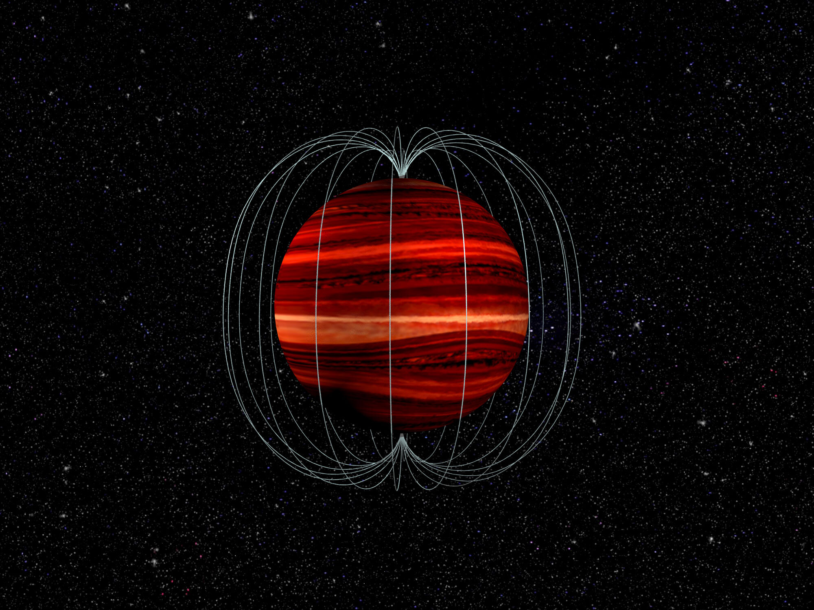

First Measurement of Windspeed on a Brown Dwarf
In a new paper published in Science, my collaborators and I reported the first measurement of the wind speed on a brown dwarf. Inspired by a technique used previously on Jupiter, we combined two different types of observations to measure the wind speed — radio and infrared monitoring. We collected radio data for 2M1047+21 using the Very Large Array telescope network, and infrared data using NASA’s Spitzer Space Telescope. Our observations revealed a strong eastward wind of approximately 650 m/s (or 2,340 km/h)! This new technique can be used to measure winds not only on brown dwarfs, but also on extrasolar planets in the future.